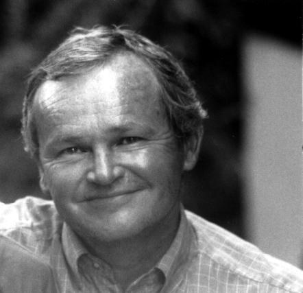

Les profs :
| Les mathématiques, Rémi COUTENS : | | Même le chameau du désert a la bosse des maths !! |
Il
y a bien des années qu'on ne m'avait pas demandé une dissert ! Bon, j'ai promis,
faut le faire.
Bien 4, 5 lignes et sujet libre, ça va doit être facile. Ah
oui, ne pas oublier d'utiliser le correcteur d'orthographe sinon ça va faire moche.
Tout d'abord, félicitations aux webmasters bénévoles qui ont pris
en main ce site. J'ai enfin pu apprendre qui était Krophete (j'avais bien cru
deviner, mais je n'étais pas sûr).
Bon et maintenant, parler de maths
?
En
sup MPSI, l'important volume horaire consacré aux mathématiques permet d'étudier
des outils puissants qui servent dans les matières scientifiques… Oh et puis non
! Si vous voulez des renseignements de ce type : demandez les brochures de l'Onisep,
surfez sur des sites spécialisés par exemple celui
du lycée Pothier, ou mieux écrivez aux élèves
de la sup3 ! (#vous pouvez également posez toutes vos questions
sur le forum de ce site, on vous répondra avec plaisir)
Parler
de moi ? Non, ne soyons pas mégalo. A la rigueur, parlons de mes charmants
enfants : Louis 4 ans et Juliette 2 ans.
Louis me donne déjà beaucoup de satisfaction,
il aime les filles rectangles, créer des partitions de l'ensemble de ses
voitures en utilisant la relation d'équivalence " à la même couleur que
" etc.
Juliette commence juste à parler, aussi je n'ai pas encore d'anecdote
à raconter. De toutes façons, son sourire suffit à me ravir.
Sans parler vraiment
de moi, voici quand même une citation que j'aime bien :
" La vie n'est bonne
qu'à deux choses : Découvrir les mathématiques et enseigner les mathématiques
" D. Poisson (1781-1840). Ceci dit, il me semble que c'est plutôt l'esprit de
David Hilbert (1862-1943) qui plane sur ce site puisqu'il affirmait qu'on pouvait
en géométrie remplacer le mot droite par tabouret et le mot point
par verre de bière (pour plus de détails se procurer le livre de B. Hauchecorne
& D. Suratteau, Des mathématiciens de A à Z, ellipses, 1996).
Parler
un peu de la prépa. Ah ça oui. Obligatoire. On entend tellement de choses
sur les classes préparatoires. C'est vrai que ce n'est pas facile. Et comme vous
l'avez lu, si vous avez parcouru ce site avec attention, cela apprend la modestie
: sans travailler il est impossible de réussir et même en travaillant, les progrès
ne sont pas toujours immédiats. Mais ils arrivent et là c'est le bonheur ! D'ailleurs,
vous aviez compris aussi, toujours grâce à ce site et même si vous n'avez lu qu'une
ligne sur deux, que ce n'est pas l'enfer. Donc n'hésitez pas !
Quant aux futurs
ex-HX 3 208, bon courage pour la suite, gardez la tête froide mais n'oubliez pas
que l'esprit de la sup3 est avec vous, c'est pour cela que vous êtes les meilleurs
!
| La physique-chimie, Sophie SMOLEVSKY : |
La physique en MPSI est la continuité de celle de terminale . La différence avec la terminale est au niveau du raisonnement que l'on demande aux élèves : Il n'y a plus l'exercice type où l'on change simplement les notations et les applications numériques pour le DS ou le bac. En sup on vous demande un raisonnement scientifique. La mémoire ne suffit plus, il faut comprendre et savoir interpréter les phénomènes étudiés. Le problème posé en devoir ne sera pas nécessairement la réplique des exercices faits en classe. Il faut analyser les données, prendre du recul par rapport au cours et adapter son raisonnement. Ceci dit, pas de panique ! On reprend tout à la base ! Il s'agit ensuite de ne pas lâcher prise en fournissant un travail régulier. Si vous avez un esprit scientifique, il n'y a pas de raison que ça ne marche pas !
| Le français, M. RAIMBAULT : |
| La SI (Sciences de l'Ingénieur), Yves TRAQUELET : |
| L'allemand LV1, M. MOTARD : |  |
| L'anglais LV1, Mme GOUCHET : | Son texte très bientôt ! |